Radio setup
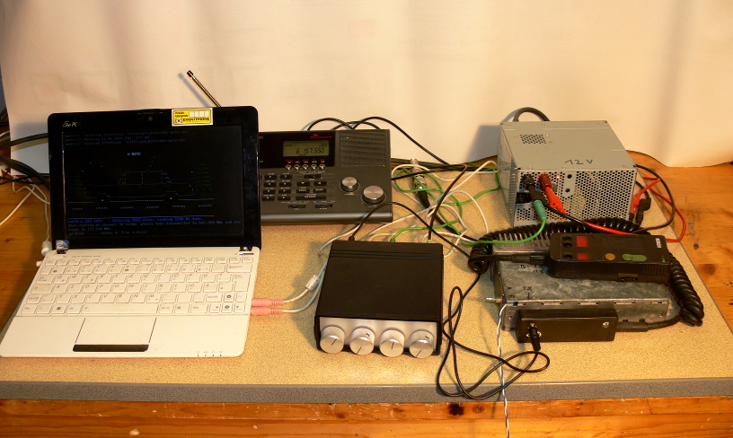
The main idea of this project is to use a sound adapter to generate and analyze FM modulated signals.
Only a transmitter and a receiver is required.
All signal processing is done in software.
The software is written for Linux.
So the first thing you need is PC with a sound adapter.
This software uses Alsa kernel driver to access audio input and output.
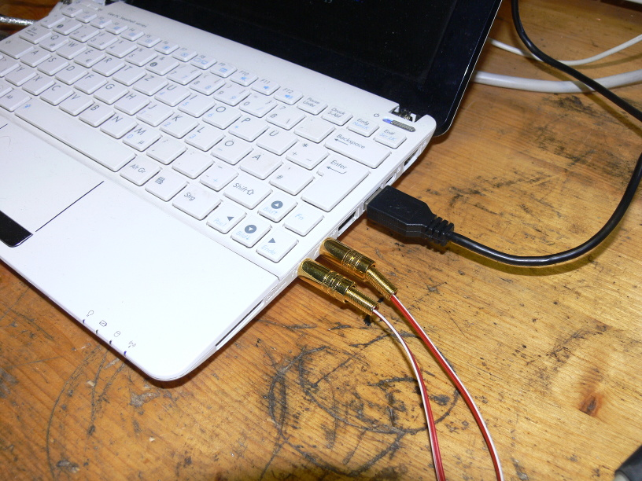
Use a radio transmitter for 2-meter band to transmit to A-Netz or B-Netz phones.
Use a radio transmitter for 70-cm band to transmit to C-Netz or NMT phones.
An amateur radio can be used, but be sure it is not limited to amateur radio frequencies and channel spacing.
For A-Netz the transmitter must be able to transmit around 162 MHz.
For B-Netz the transmitter must be able to transmit around 153 MHz.
For C-Netz the transmitter must be able to transmit around 465 MHz.
For NMT the transmitter must be able to transmit around 463 MHz.
This image shows a two-band amateur radio receiver without limitations for the frequencies above:
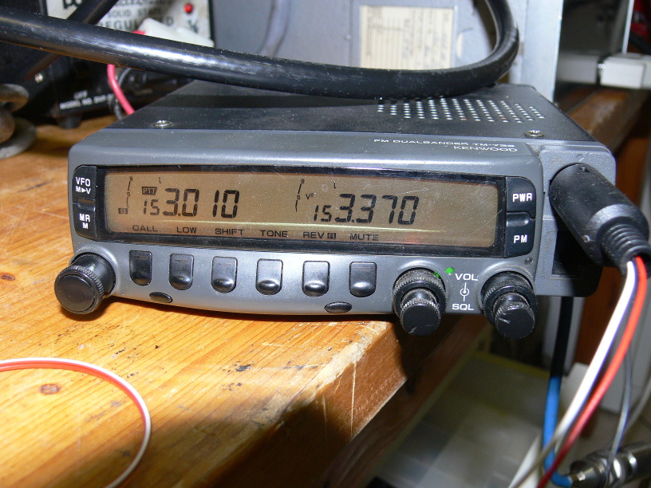
I built several transmitters out of modified taxi radios.
It features a simple digital PLL (configurable by jumpers) and allows to directly connect the audio signal to the oscillator.
This is highly recommended for the C-Netz, because signaling is done by sifting the carrier directly.
One unit has a switch to change between A-Netz and B-Netz (2-meter version) and the other units to change between C-Netz and NMT (70-cm version).
I added an input to switch between two channels for the B-Netz.
(Whenever a B-Netz phone is paged, the channel must be temporarily switched to the paging channel.)
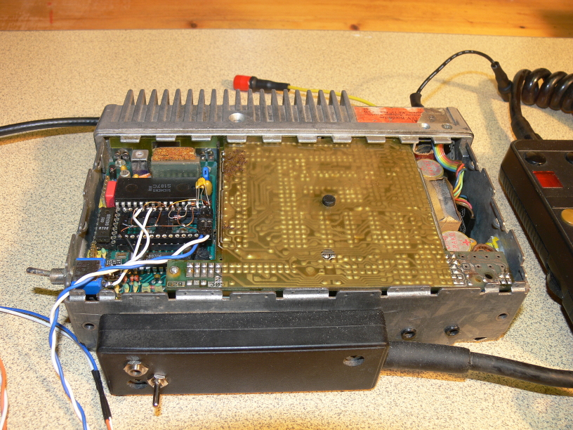
Use radio receiver for 2-meter band to receive from A-Netz or B-Netz phones.
Use radio receiver for 70-cm band to receive from C-Netz or NMT phones.
The transmitter cannot be re-used, because all networks are full duplex.
A separate radio is required to simultaneously transmit and receive.
For A-Netz the receiver must be able to receive around 162 MHz and 157 MHz.
For B-Netz the receiver must be able to receive around 153 MHz and 148 MHz.
For C-Netz the receiver must be able to receive around 465 MHz and 455 MHz.
For NMT the receiver must be able to receive around 463 MHz and 453 MHz.
The receiver must support both up-link and down-link frequencies, to make a test loop for the calibration process.
This image shows a two-band amateur radio receiver that supports all the frequencies:
(It is not sufficient for C-Netz, because it distorts the signal too much.)
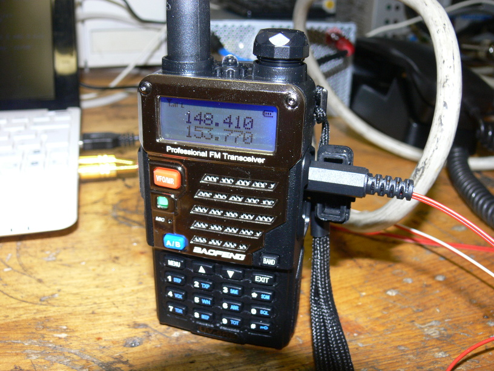
The best solution I could find for low price is the Uniden UBC360CLT.
It is actually some kind of clock radio with scanner.
It supports all relevant bands up to about 950 MHz.
In all bands the channel spacing is freely selectable.
Up to 300 channels can be stored and simply selected by using up/down keys.
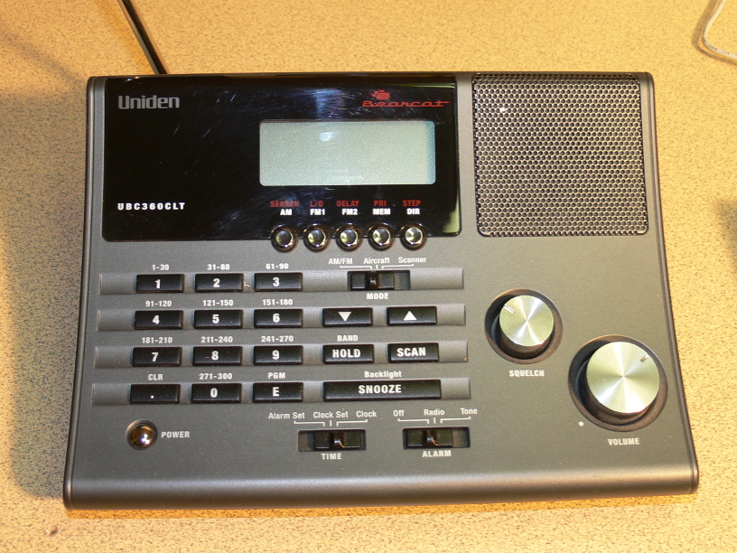
I added a discriminator output to the radio, to get undistorted receive signal.
This is highly recommended for the C-Netz, because signaling is done by sifting the carrier directly.
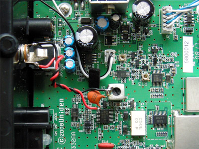
In order to keep RF emission low, use a dummy load for lab test.
Use two separated antennas for outside use of the mobile phone.
Connect one dummy load to the transmitter and another one to the mobile phone's antenna connector.
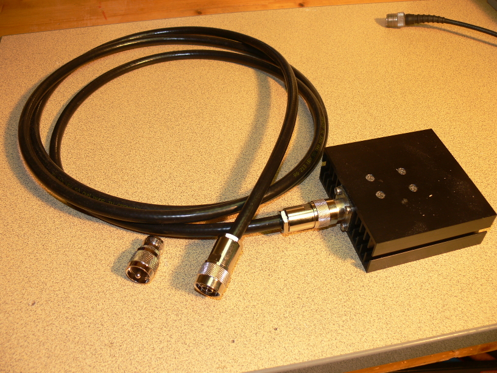
For the radios and the phone, you nee a sufficient power supply.
Especially for old A-Netz phones, be sure to have something strong with 10 Ampere or even more, depending on your phone.
My phone did not work correctly with a 5 Ampere 12 Volts regulated power supply.
I suggest to use an amateur radio power supply with low ripple.
In my case I use modified ATX-2 power supply for 12 or 13.8 Volts.
The voltage can be adjusted in most power supplies, but 12 Volts is good enough.
These power supplies have built-in over-current/over-voltage protection.
The ATX-2 power supplies are regulated on the 12 Volts rail.
I added two plugs and a switch.
The switch connects to the PS-On line.
In case of an over-current, the switch can be used to reset the protection circuit.
Note that opening a switching power supply can be dangerous and may cause death.
If you don't have the knowledge about power supplies, ask an expert to help you.
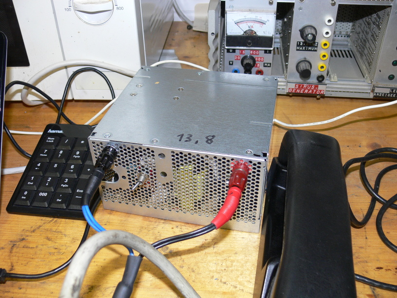
Early tests were done without any wiring between radios and sound adapter.
This may worked for early tests with the B-Netz, but turned out to be a pain in the ass.
It is not possible to keep the levels and avoid feed-backs.
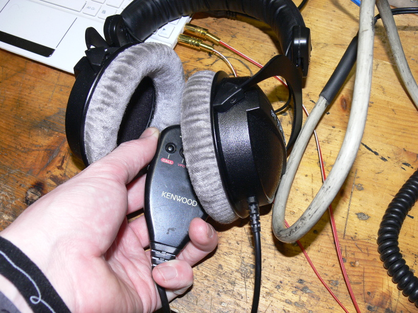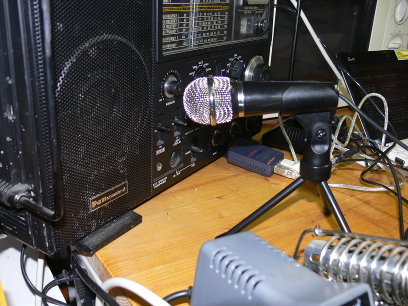
The sound adapter must be connected to a transmitter and a receiver.
Coils are suggested for galvanic separation.
I don't use coils, instead I add extra grounding wire between earth (power supply) and sound interface.
For adjustmnt I highly recommend to use variable resistors.
This makes the adjustment process faster.
I use 4.7 K resistor for connecting headphone output to radio input.
I use 10 K resistor for connecting radio output (discriminator) to microphone input.
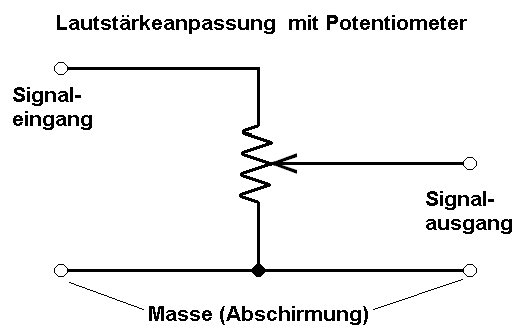
Connect the ground of input and output to one end of the resistor. (shown in the picture as 'Masse')
Select this side to which the slider moves, if the knob turned all the way left (or moved all the way down).
Connect the input signal ('Signaleingang') to the other end of the resistor.
At least connect the output signal ('Signalausgang') to the slider of the resistor.
During development process, I ended up like this:
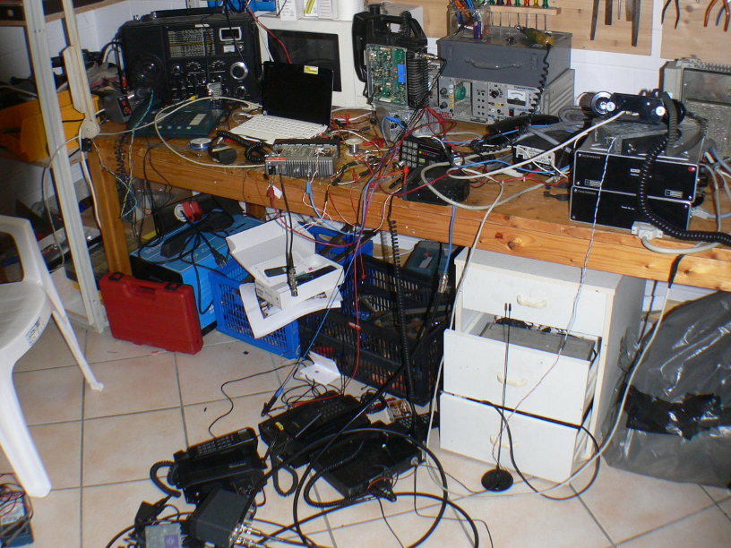
After figuring out how everything works, I decided to build a small box with knobs on the front and 3.5mm audio jacks in the back.
It allows to connect two radio transmitters and two radio receives to one stereo sound card.
Also it has a banana plug to ground the box.
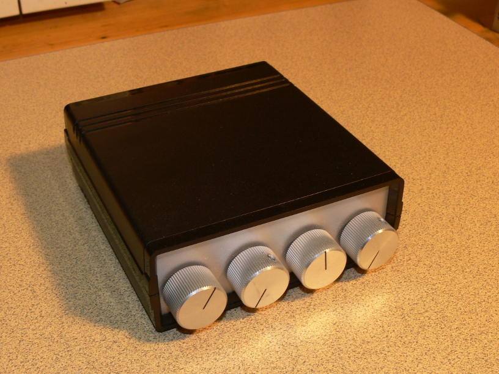
And finally you need a classic working phone.
Be sure to connect the phone to a dummy load too.
Place both dummy loads (transmitter and phone) close together (several centimeters).
Put an antenna on the receiver.
If your phone has built in antenna and cannot be connected to a dummy load (C-Netz / NMT), stay a few meters away from transmitter (dummy load) and receiver.
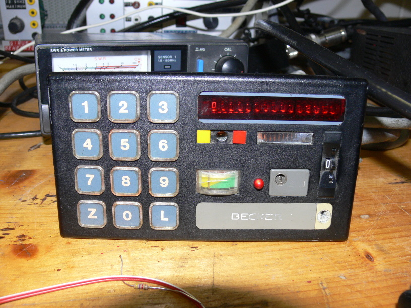
[Back to main page]
|